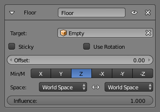

Floor Constraint 基面约束¶
Floor（基面） 约束允许你使用它的目标位置（和可选的旋转）指定一个平面作为自身不能够去的“禁区”。这个平面可以拥有任何你喜欢的方向。换句话说，它可以创建一个地板 （或天花板或墙上） ！请注意，它只能够模拟完全平面，即使您使用 Vertex Group顶点组 选项。它也不能用于不均匀的地板或墙壁。
Options 选项¶

Floor panel. 基面面板。
- Targets 目标
- 数据ID 用于选择约束目标，当它为无（none）时不起作用（红色状态）。
- Sticky 黏性
- 该按钮使得自身在触摸“floor（基面）”平面时不能移动（它不能在飞机的表面上四处滑动）。这是制作走和跑动的动画很棒的选择 ！
- Use Rotation 使用旋转
- 这个按钮强制约束考虑到目标的旋转。这可以让你有一个任何你喜欢的方向的“floor(基面）”，不只是全局XY，XZ和YZ的…
- Offset 偏移量
- 这个数字按钮允许你通过给定的Blender单位从目标的中心偏移 "floor（基面）" 。例如使用它视为从脚骨到脚的表面的距离。
- Max/Min 最大/最小值
- 这组（相互排斥）按钮控制哪个平面将是Floor（基面）。默认情况下按钮的名称与该平面的 法线 对应（例如使Z表示“XY平面”等），这些法线与 全局 轴对齐。但是，如果启用 Use Rotation（使用旋转） （见上文），他们将与 局部目标轴 对齐。约束不仅定义了一个不可跨越的平面，而且它是禁止自身一方，你可以选择哪一边启用正或负法线。默认情况下Z，自身粘贴在正Z坐标。
- Space 空间
- 空间之间标准转换。